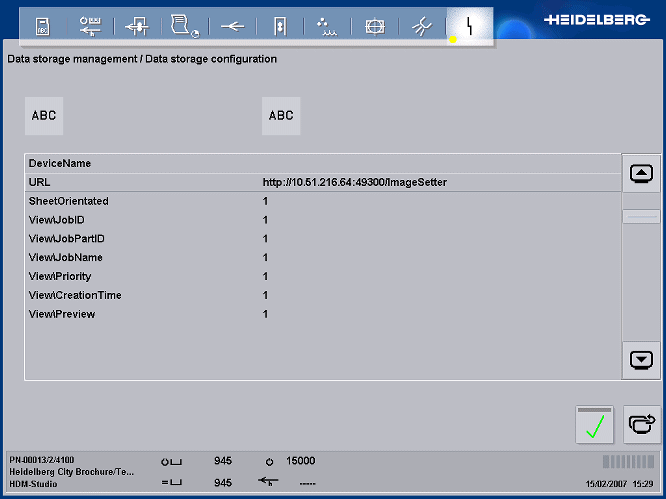

First go to the "Manage Service/Data Storage" form either with "Service > Data storage management" (older CP2000 versions) or "Service > Prinect Configuration > Data storage management" (newer CP2000 versions). The "MetaDimension" device (or whatever the name of the device may be) must be in the "Active data storage devices" list.
After you select "MetaDimension" in "Active data storage devices", you can then configure the device by clicking the "Data storage configuration" button. A list of the configurable parameters will then be shown for this device.

The first parameter, "DeviceName", allows you to choose any name for the device. If no name is entered, "MetaDimension" is used. For example, you can enter "Prinect Shooter".
For the "URL" parameter, you must enter the URL - including port number - of the HTTP server that Prinect Shooter provides.
After Prinect Shooter is installed, the URL is set as follows:
URL = http://hostname:port number/ImageSetter
The "hostname" can either be the alphanumeric computer name of the server or the IP address of the server, entered in this form: aaa.bbb.ccc.ddd. For example, the computer name "localhost" is also used as a synonym for the local computer and its IP address is: "127.0.0.1" (this is valid in general).
From experience, you should use the numeric IP address as this avoids having to first assign the host name to the IP address. This action could involve longer response times.
The port number and "ImageSetter" are set by Prinect Shooter and your URL is as follows:
URL = http://hostname:49300/ImageSetter,
with "hostname" standing for the Prinect Shooter computer or its IP address.
The other parameters allow you to activate or deactivate the display of certain columns in the job list. Only when one ("1") is entered will the column in question be shown in the job list. On the other hand, a zero ("0") means that the column will not be shown.
The parameters are assigned to the columns as follows:
Copyright © 2013 Heidelberger Druckmaschinen AG